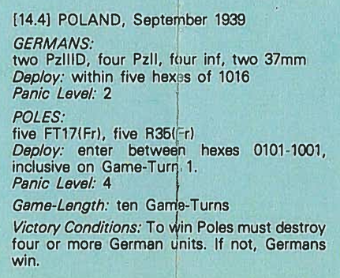
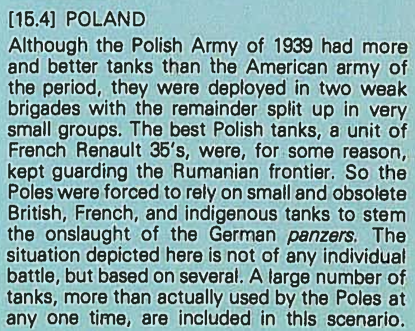

Special Rules:
- Units either 'fire' or 'move' in a turn, they cannot do both.
- No defensive fire, but must stop on moving adjacent to non-disrupted enemy unit.
- () represent hard targets, cannot be fire-attacked by 'R' units (rifle), only by 'A' units (armour-piercing).
- () can still be 'melee' attacked by 'R' units.
- Units can move and melee, and...
- units that have fire-attacked that turn can melee attack adjacent enemy units as well.